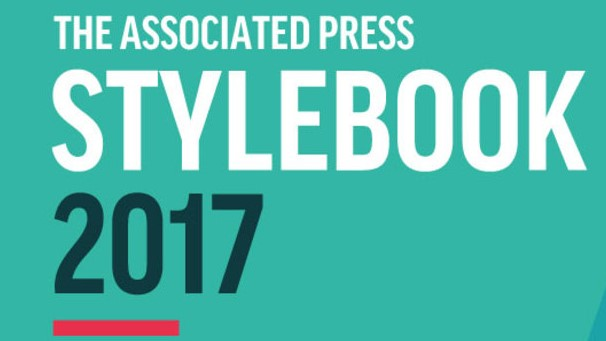

My Professor
Another requirement for communication majors is media writing. I am taking the media writing class with Professor Dale Jenkins. Professor Jenkins is originally from North Carolina and received his undergraduate degree from the University of North Carolina at Chapel Hill. Professor Jenkins has worked at Virginia Tech for over twenty years, and he is only teaching media writing this semester. Prior to working at Virginia Tech, Professor Jenkins worked as a journalist for a newspaper in North Carolina. Professor Jenkins tells us great stories from his work as a journalist, and incorporate this into the coursework.
About the Course
Media writing is centered around the Associated Press (AP) Stylebook. This stylebook is the standard that all journalists adhere to for writing. Following the AP Stylebook is crucial to being successful in this course. To ensure students are learning the AP Stylebook, we have bi-weekly grammar quizzes. We are given 10 sentences and we have to fix all of the grammar mistakes. Grammar has always been difficult for me, but this course has forced me to improve my writing skills. My favorite part about media writing is learning about headlines. At the start of every class, students have the opportunity to present stories in the news and media. This part of the course has made me more politically aware of current events. Professor Jenkins emphasizes that communication students need to be aware of what's going on in the world. I have developed a strong interest in politics, and I owe a lot of that to Dr. Jenkins. Participating in headlines also helps students improve their participation grade for the class.
